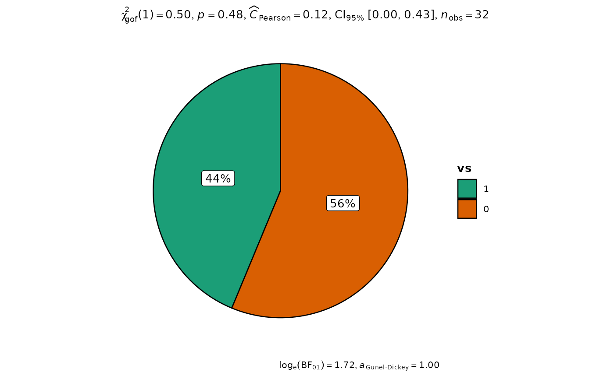
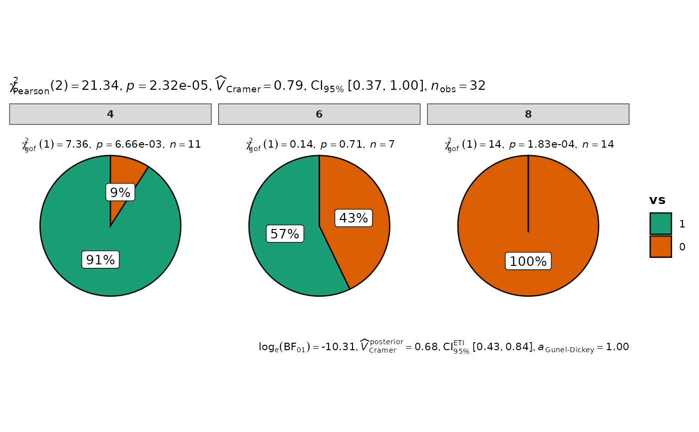

Pie charts for categorical data with statistical details included in the plot as a subtitle.
Usage
ggpiestats(
data,
x,
y = NULL,
counts = NULL,
type = "parametric",
paired = FALSE,
results.subtitle = TRUE,
label = "percentage",
label.args = list(direction = "both"),
label.repel = FALSE,
k = 2L,
proportion.test = results.subtitle,
perc.k = 0L,
bf.message = TRUE,
ratio = NULL,
conf.level = 0.95,
sampling.plan = "indepMulti",
fixed.margin = "rows",
prior.concentration = 1,
title = NULL,
subtitle = NULL,
caption = NULL,
legend.title = NULL,
ggtheme = ggstatsplot::theme_ggstatsplot(),
package = "RColorBrewer",
palette = "Dark2",
ggplot.component = NULL,
output = "plot",
...
)Arguments
- data
A data frame (or a tibble) from which variables specified are to be taken. Other data types (e.g., matrix,table, array, etc.) will not be accepted. Additionally, grouped data frames from
{dplyr}should be ungrouped before they are entered asdata.- x
The variable to use as the rows in the contingency table. Please note that if there are empty factor levels in your variable, they will be dropped.
- y
The variable to use as the columns in the contingency table. Please note that if there are empty factor levels in your variable, they will be dropped. Default is
NULL. IfNULL, one-sample proportion test (a goodness of fit test) will be run for thexvariable. Otherwise an appropriate association test will be run. This argument can not beNULLforggbarstatsfunction.- counts
The variable in data containing counts, or
NULLif each row represents a single observation.- type
A character specifying the type of statistical approach:
"parametric""nonparametric""robust""bayes"
You can specify just the initial letter.
- paired
Logical indicating whether data came from a within-subjects or repeated measures design study (Default:
FALSE). IfTRUE, McNemar's test expression will be returned. IfFALSE, Pearson's chi-square test will be returned.- results.subtitle
Decides whether the results of statistical tests are to be displayed as a subtitle (Default:
TRUE). If set toFALSE, only the plot will be returned.- label
Character decides what information needs to be displayed on the label in each pie slice. Possible options are
"percentage"(default),"counts","both".- label.args
Additional aesthetic arguments that will be passed to
geom_label.- label.repel
Whether labels should be repelled using
ggrepelpackage. This can be helpful in case the labels are overlapping.- k
Number of digits after decimal point (should be an integer) (Default:
k = 2L).- proportion.test
Decides whether proportion test for
xvariable is to be carried out for each level ofy. Defaults toresults.subtitle. Inggbarstats, only p-values from this test will be displayed.- perc.k
Numeric that decides number of decimal places for percentage labels (Default:
0L).- bf.message
Logical that decides whether to display Bayes Factor in favor of the null hypothesis. This argument is relevant only for parametric test (Default:
TRUE).- ratio
A vector of proportions: the expected proportions for the proportion test (should sum to 1). Default is
NULL, which means the null is equal theoretical proportions across the levels of the nominal variable. This means if there are two levels this will beratio = c(0.5,0.5)or if there are four levels this will beratio = c(0.25,0.25,0.25,0.25), etc.- conf.level
Scalar between
0and1(default:95%confidence/credible intervals,0.95). IfNULL, no confidence intervals will be computed.- sampling.plan
Character describing the sampling plan. Possible options are
"indepMulti"(independent multinomial; default),"poisson","jointMulti"(joint multinomial),"hypergeom"(hypergeometric). For more, see?BayesFactor::contingencyTableBF().- fixed.margin
For the independent multinomial sampling plan, which margin is fixed (
"rows"or"cols"). Defaults to"rows".- prior.concentration
Specifies the prior concentration parameter, set to
1by default. It indexes the expected deviation from the null hypothesis under the alternative, and corresponds to Gunel and Dickey's (1974)"a"parameter.- title
The text for the plot title.
- subtitle
The text for the plot subtitle. Will work only if
results.subtitle = FALSE.- caption
The text for the plot caption. This argument is relevant only if
bf.message = FALSE.- legend.title
Title text for the legend.
- ggtheme
A
{ggplot2}theme. Default value isggstatsplot::theme_ggstatsplot(). Any of the{ggplot2}themes (e.g.,theme_bw()), or themes from extension packages are allowed (e.g.,ggthemes::theme_fivethirtyeight(),hrbrthemes::theme_ipsum_ps(), etc.). But note that sometimes these themes will remove some of the details that{ggstatsplot}plots typically contains. For example, if relevant,ggbetweenstats()shows details about multiple comparison test as a label on the secondary Y-axis. Some themes (e.g.ggthemes::theme_fivethirtyeight()) will remove the secondary Y-axis and thus the details as well.- package, palette
Name of the package from which the given palette is to be extracted. The available palettes and packages can be checked by running
View(paletteer::palettes_d_names).- ggplot.component
A
ggplotcomponent to be added to the plot prepared by{ggstatsplot}. This argument is primarily helpful forgrouped_variants of all primary functions. Default isNULL. The argument should be entered as a{ggplot2}function or a list of{ggplot2}functions.- output
Character that describes what is to be returned: can be
"plot"(default) or"subtitle"or"caption". Setting this to"subtitle"will return the expression containing statistical results. If you have setresults.subtitle = FALSE, then this will return aNULL. Setting this to"caption"will return the expression containing details about Bayes Factor analysis, but valid only whentype = "parametric"andbf.message = TRUE, otherwise this will return aNULL.- ...
Currently ignored.
Details
For details, see: https://indrajeetpatil.github.io/ggstatsplot/articles/web_only/ggpiestats.html
Contingency table analyses
The table below provides summary about:
statistical test carried out for inferential statistics
type of effect size estimate and a measure of uncertainty for this estimate
functions used internally to compute these details
two-way table
Hypothesis testing
| Type | Design | Test | Function used |
| Parametric/Non-parametric | Unpaired | Pearson's chi-squared test | stats::chisq.test() |
| Bayesian | Unpaired | Bayesian Pearson's chi-squared test | BayesFactor::contingencyTableBF() |
| Parametric/Non-parametric | Paired | McNemar's chi-squared test | stats::mcnemar.test() |
| Bayesian | Paired | No | No |
Effect size estimation
| Type | Design | Effect size | CI available? | Function used |
| Parametric/Non-parametric | Unpaired | Cramer's V | Yes | effectsize::cramers_v() |
| Bayesian | Unpaired | Cramer's V | Yes | effectsize::cramers_v() |
| Parametric/Non-parametric | Paired | Cohen's g | Yes | effectsize::cohens_g() |
| Bayesian | Paired | No | No | No |
one-way table
Hypothesis testing
| Type | Test | Function used |
| Parametric/Non-parametric | Goodness of fit chi-squared test | stats::chisq.test() |
| Bayesian | Bayesian Goodness of fit chi-squared test | (custom) |
Effect size estimation
| Type | Effect size | CI available? | Function used |
| Parametric/Non-parametric | Pearson's C | Yes | effectsize::pearsons_c() |
| Bayesian | No | No | No |
Examples
# \donttest{
# for reproducibility
set.seed(123)
library(ggstatsplot)
# one sample goodness of fit proportion test
ggpiestats(mtcars, x = vs)

# association test (or contingency table analysis)
ggpiestats(mtcars, x = vs, y = cyl)

# }